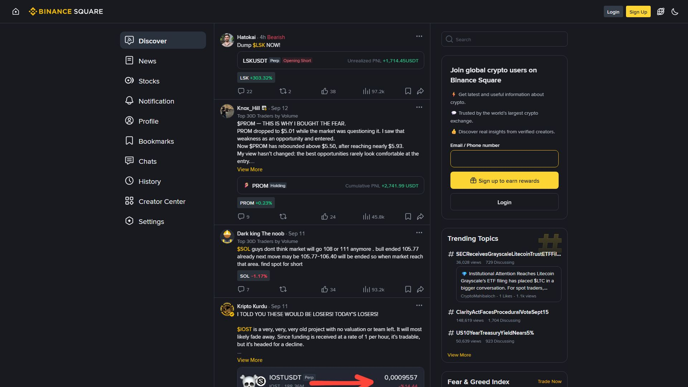

Binance Square بائننس کا سوشل فیچر ہے جہاں traders، تحلیل کار (Analysts) اور پروجیکٹ ٹیمیں اپنی رائے، چارٹ تجزیہ، خبریں اور لائیو معلومات شیئر کرتی ہیں۔ اس کا اصل فائدہ رازداری سے سیکھنا اور کمیونٹی سے جڑنا ہے — مگر یہیں ہائپ، جعلی Signal اور "پمپ" بھی ہوتے ہیں۔

- تجارتی پوسٹس (Technical/Fundamental رائے)
- مارکیٹ نیوز اور اپڈیٹس
- پروجیکٹ ٹیموں کی آفیشل پوسٹس
- Live AMA/Learning سیشنز
- اشاعتی/Referral پوسٹس (Promotional)Feed دیکھیں → پسند آنے والا مصنف Follow کریں
→ Post پر Like/Comment/Share
→ اپنی Post لکھیں (ویوی، تجزیہ، سوال)حکمت عملی: چند معتبر مصنفین کو Follow کریں بجائے سو ہائپ پوسٹس کے۔ ایسے اکاؤنٹس کی قدر کریں جو رسک بھی بتاتے ہیں، نہ صرف "مون" کی یقین دہانی۔
| نشان | قابلِ اعتماد؟ |
|---|---|
| ماخذ/Chart کے ساتھ تجزیہ | زیادہ |
| "Guaranteed 100x" قسم کے دعوے | ❌ جھوٹا |
| DM/Private "VIP Group" پر لے جانا | ❌ خطرناک |
| صرف Referral/پروجیکٹ فروخت | ❌ دھوکے کا امکان |
| مدیر کا Verified/Official نشان | بہتر |
| نامناسب/غصے والی بولی | کم اعتبار |
اصول: Square معلومات کے لیے ہے، مالی مشورے کے لیے نہیں۔ کسی بھی رائے پر رقم لگانے سے پہلے خود چیک کریں۔
یہ خطرے کی علامات ہیں:
- "میری Referral لنک سے رجسٹر کرو اور پیسہ کماؤ"
- DM میں "چیف/دی لاکھوں" والے وعدے
- پروجیکٹ کے نئے شاندار ریٹرن کے صرف مثبت رائے
- Screenshot میں منافع، لیکن ہمیشہ نقصان نہ دکھانا
- لنک جو بائننس سے باہر لے جائےساکھ بڑھانے کے درست طریقے:
- اصل تجزیہ (Chart + Reason + Risk)
- ماخذ کے ساتھ خبر شیئر کرنا
- غلطی کا اعتراف (منافع کی دادیں کم، سیکھ زیادہ)
- دوسروں کے سوال کا مؤدبانہ جواب
- Spam/بے بنیاد دعووں سے پرہیز"Square معلومات کا بازار ہے، فیصلوں کا نہیں — ہر رائے کو اپنی عقل پر تولیں۔" اصول: (1) بغیر تحقیق کسی رائے پر ٹریڈ نہ کریں، (2) Private VIP گروپس سے بچیں، (3) رسک کے قائل مصنفین کی قدر کریں۔